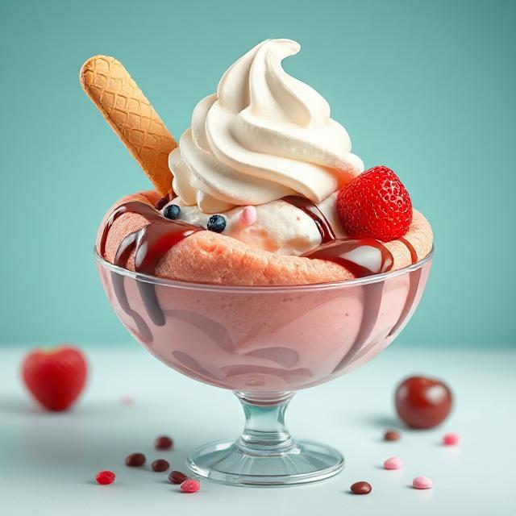

딸기
딸기 아이스크림은 신선한 딸기의 달콤하고 상큼한 맛이 살아있는 디저트입니다. 부드럽고 크리미한 질감이 입안을 감싸며, 과육이 씹히는 재미도 더해집니다. 여름철
시원하게 즐기기 좋은 대표적인 과일 아이스크림입니다.
가격 : 3000원
민트
민트 아이스크림은 시원하고 상쾌한 민트 향이 특징인 디저트입니다. 달콤한 크림 베이스에 상큼한 민트 맛이 조화를 이루며, 초코칩이 더해져 식감과 맛을 풍부하게
합니다. 호불호가 갈리지만 독특한 청량감으로 많은 사랑을 받습니다.
가격 : 2840원
바닐라
바닐라 아이스크림은 부드럽고 고소한 맛이 특징인 클래식한 디저트입니다. 은은한 바닐라 향이 입안을 감싸며, 다른 토핑이나 디저트와도 잘 어울립니다. 심플하면서도
깊은 맛으로 남녀노소에게 사랑받습니다.
가격 : 3270원
수박
수박 아이스크림은 시원하고 달콤한 수박의 맛을 그대로 담은 여름철 인기 디저트입니다. 상큼한 과즙과 부드러운 식감이 조화를 이루며 청량감을 선사합니다. 더운 날에
즐기기 좋은 과일 아이스크림입니다.
가격 : 2890원
오렌지
오렌지 아이스크림은 상큼하고 톡 쏘는 오렌지 맛이 입안을 가득 채워주는 과일 디저트입니다. 비타민C가 풍부한 느낌의 산뜻함으로 입맛을 돋워줍니다. 달콤함과
시트러스 향이 매력적입니다.
가격 : 3010원
체리
체리 아이스크림은 진한 체리의 풍미와 달콤한 향이 특징입니다. 과육이 톡톡 씹히며 입안 가득 상큼함이 퍼지는 디저트입니다. 로맨틱하고 풍부한 맛으로 인기 있는
과일 맛입니다.
가격 : 2760원
초코
초코 아이스크림은 진한 초콜릿 맛과 부드러운 질감이 조화를 이루는 대표적인 인기 맛입니다. 진하고 달콤한 풍미가 입안을 감싸며, 남녀노소 모두에게 사랑받습니다.
꾸준히 인기 있는 클래식한 선택입니다.
가격 : 3180원
카라멜
카라멜 아이스크림은 깊고 고소한 단맛이 매력적인 디저트입니다. 부드러운 크림과 진한 캐러멜 시럽이 어우러져 풍부한 맛을 냅니다. 달콤한 여운이 오래 남는
맛입니다.
가격 : 2940원
키위
키위 아이스크림은 상큼하고 새콤한 키위 맛이 입안을 개운하게 해줍니다. 과일 특유의 청량감과 부드러운 식감이 조화를 이루며 신선한 느낌을 줍니다. 가볍게 즐기기
좋은 과일 디저트입니다.
가격 : 2830원

우유
우유 아이스크림은 순하고 담백한 맛으로 입안에서 부드럽게 녹아내립니다. 우유의 고소함이 살아 있어 기본이지만 질리지 않는 맛입니다. 다른 토핑과 함께해도 잘
어울리는 베이스 아이스크림입니다.
가격 : 2660원
마늘
마늘 아이스크림은 독특하고 강한 향을 가진 이색 디저트입니다. 달콤함 속에 은은하게 퍼지는 마늘향이 색다른 맛을 선사합니다. 호기심 많은 사람들에게 도전 정신을
자극하는 메뉴입니다.
가격 : 3050원
쌀
쌀 아이스크림은 고소하고 담백한 쌀 본연의 맛이 살아있는 전통적인 느낌의 디저트입니다. 부드럽고 촉촉한 식감이 특징이며, 건강한 맛으로 부담 없이 즐길 수
있습니다. 한식 디저트와도 잘 어울립니다.
가격 : 2900원
주문
주문내역